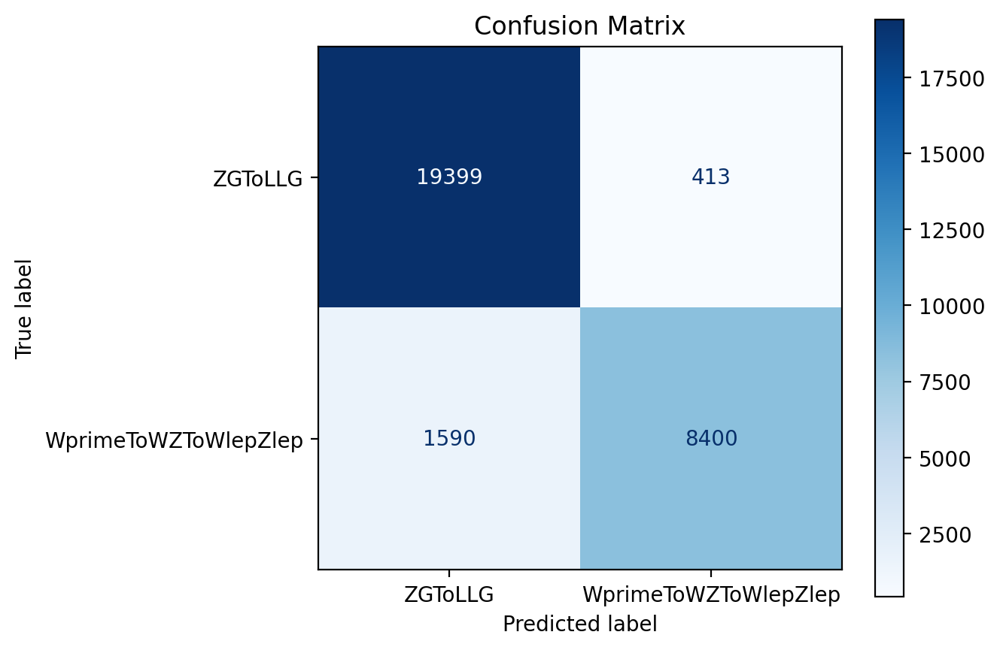

Complete workflow
This section demonstrates an end-to-end example of running the complete workflow, data processing, root into HDF5 conversion, and ML model training.
We assume the following:
- You have a LXPLUS account and a GRID certificate.
- You already know the FLN of your datasets.
- You have set up your CMSSW environment and are inside the
src/directory. - You have your processing scripts for your specific analysis.
First, clone the GitHub repository:
git clone https://github.com/castaned/ML-integration-CMSSW <directory_name>
cd <directory_name>
You can choose any <directory_name> you like. In this example <directory_name> will be ml_framework.
Info
Remember that all example files can be found in the example_files directory of the repository.
First, we processed and convert the data. We move to the data processing directory:
cd data_processing
Knowing the FLN, and having the processing script, we can process the data by modifying the YAML file data_processing_config.yaml:
---
proxy:
generate: 1 # 1 yes, 0 no
voms: "cms"
proxy_time: "192:00"
proxy_path: "$HOME/.globus/x509up_$(id -u)"
data_processing:
condor_params:
executable_file: "run_filter.sh"
cpus: 1
gpus: 0
mem: 1.5GB
disk: 2GB
job_flavour: "espresso" # 20 minutes
processing_script: "src/ml_framework/new_dataproc/example/filterNanoAOD.py"
eos_output_dir: "/eos/user/v/vminjare/test_dataprocessing"
afs_cms_base: "/afs/cern.ch/user/v/vminjare/CMSSW_13_3_0"
redirector: "cms-xrd-global.cern.ch"
datasets:
- FLN: "/ZGToLLG_01J_5f_TuneCP5_13TeV-amcatnloFXFX-pythia8/RunIISummer20UL18NanoAODv9-106X_upgrade2018_realistic_v16_L1v1-v1/NANOAODSIM"
ID: 0
amount: 3 # -1 is all ROOT files
- FLN: "/WprimeToWZToWlepZlep_narrow_M1000_TuneCP5_13TeV-madgraph-pythia8/RunIISummer20UL18NanoAODv9-106X_upgrade2018_realistic_v16_L1v1-v1/NANOAODSIM"
ID: 1
amount: -1
Info
Indentation in YAML files is very important, and YAML files do not accept tabs.
The main processing script, processing_script, in this case filterNanoAOD.py, must satisfy the following conditions:
- It must accept exactly the following arguments input file path, FLN, OUTPUT DIRECTORY in this order.
- It must have a dataset labels branch taht start at 0 and increase sequentially without gaps, as the mapping declare in the
datasetssection in the YAML file.
For more information, check the dataset processing section.
If your GRID proxy certificate is still valid, do not generate a new one. Change generate: 1 to generate: 0 under the proxy section.
In this example, I have two files to process the data:
example/
├── branchsel.txt
└── filterNanoAOD.py
In general terms, this analysis file selects events containing at least three leptons (electrons and/or muons), classifies the events into categories according to the lepton composition, and computes composite variables derived from the leptonic information.
These variables include the reconstructed invariant mass of the three-lepton system, the total momentum, and other kinematic quantities that allow the definition of the region of interest in the search for specific exotic particles. This procedure is performed independently for each sample, LFN in the YAML file.
Now we submit the jobs, one per ROOT file to process:
python3 execute_data_processing.py -f data_processing_config.yaml
When you execute the Python script, it first creates a tar archive of the entire afs_cms_base directory and uploads it to eos_output_dir. This step is performed locally in your current shell and may take several minutes. Once the jobs are submitted to HTCondor, you can monitor their status using condor_q. Also, the logs are stored in logs/. After all the jobs finish, the new ROOT file will be in the directory specified by eos_output_dir.
Now we convert the ROOT file into HDF5 files. First, we go to the directory:
cd convert_h5
As before, configure the YAML file, for this part root2h5_config.yaml. For example:
---
convertion:
input_dirs:
- "/eos/user/v/vminjare/test_dataprocessing/WprimeToWZToWlepZlep_narrow_M1000_TuneCP5_13TeV-madgraph-pythia8_RunIISummer20UL18NanoAODv9-106X_upgrade2018_realistic_v16_L1v1-v1_NANOAODSIM"
- "/eos/user/v/vminjare/test_dataprocessing/ZGToLLG_01J_5f_TuneCP5_13TeV-amcatnloFXFX-pythia8_RunIISummer20UL18NanoAODv9-106X_upgrade2018_realistic_v16_L1v1-v1_NANOAODSIM"
tree_name: "Events"
branches: "all"
# If you do not have jagged arrays leave it blank. If you use, the default value is 10
max_jagged_len:
eos_output_dir: "/eos/user/v/vminjare/test_conversionh5"
condor_params:
executable_file: "run_conversion.sh"
cpus: 1
gpus: 0
mem: 1.5GB
disk: 2GB
job_flavour: "espresso" # 20 minutes
For both conversion and training, a custom Python environment is required. We use containers for this. Before submitting the job, buil the container:
apptainer build conversion_container.sif conversion_container.def
This stage needs to run some code in the current shell, which requires Python libraries not available by default. These libraries are present in the CMSSW environment, so run cmsenv before submitting the jobs:
cmsenv
python3 execute_convert_root2h5.py -f root2h5_config.yaml
When the jobs finish, your HDF5 files will be in eos_output_dir. If there is some problem, you can check the logs in the logs/ directory.
With the processed HDF5 data, we can create, optimize, and train our ML model. Go to the training directory:
cd ml_framework/ml_training
Training can be done with HTCondor, SLURM, our directly on any a server or compute.. In this example, wel run the training in LXPLUS, so we need to configure both a YAML file and a HTCondor submission file.
Important
Note that the input_paths variable in the YAML configuration file does not reference EOS paths (e.g. /eos/user/v/vminjare/), as this part of the framework is not tightly coupled to CERN-specific systems. Access to EOS is instead handled through the HTCondor submission file, which ensures that the appropriate environment and filesystem access are available at runtime.
ml_model_config.yaml:
---
data:
input_paths:
- "test_conversionh5/WprimeToWZToWlepZlep_narrow_M1000_TuneCP5_13TeV-madgraph-pythia8_RunIISummer20UL18NanoAODv9-106X_upgrade2018_realistic_v16_L1v1-v1_NANOAODSIM"
- "test_conversionh5/ZGToLLG_01J_5f_TuneCP5_13TeV-amcatnloFXFX-pythia8_RunIISummer20UL18NanoAODv9-106X_upgrade2018_realistic_v16_L1v1-v1_NANOAODSIM"
output_path: "results"
features:
- "A_Dr_Z"
- "A_Zmass"
- "MET_pt"
- "B_Zmass"
- "B_Dr_Z"
label: "Dataset_ID"
num_classes: 2
# Leave this blank if you do not want to apply a mapping
label_mapping: "short_name_mapping.json"
model:
name: "mlp_binary_test"
type: "mlp"
ideal_accuracy: 95
num_models: 3
lxplus_template.jdl
# HTCondor Submission File
environment = \
EOS_INPUT_DIR=/eos/user/v/vminjare/test_conversionh5; \
EOS_DIR=/eos/user/v/vminjare/outputs/$(ClusterId); \
REDIRECTOR=root://eosuser.cern.ch; \
RESULTS_DIR=results/
#notify_user = email@email.com
notification = Complete
universe = vanilla
executable = lxplus_run_template.sh
should_transfer_files = YES
when_to_transfer_output = ON_EXIT
transfer_input_files = ./
x509userproxy = $ENV(X509_USER_PROXY)
output = job.$(ClusterId).$(ProcId).out
error = job.$(ClusterId).$(ProcId).err
log = job.$(ClusterId).$(ProcId).log
request_cpus = 5
request_gpus = 1
+JobFlavour = "microcentury"
queue
Now build the container:
apptainer build ml_container.sif ml_container.def
This may take a few minutes. Once the .sif file is ready, export the proxy certificate to be able to have access to XRootD:
export X509_USER_PROXPROXY=/afs/cern.ch/user/v/vminjare/.globus/x509up_u170903
Finally, submit the job:
condor_submit lxplus_template.jdl
HTCondor logs will be created where we submitted the job. However, the scrpit generate its own logs files, stderr.log and stdout.log, they will be in output_path/ along MLflow runs, plots, models files, and all result generated. If everythong went well, you will see the ROC curve and confusion matrix as follows:


Finally, if you want to inspect the MLflow runs, copy output_path/mlruns/ and the ml_container.sif to your computer and run:
apptainer exec ml_container.sif mlflow ui --backend-store-uri mlruns/ --host localhost --port 8100
The MLflow UI will then be available at localhost:8100 in your web browser.